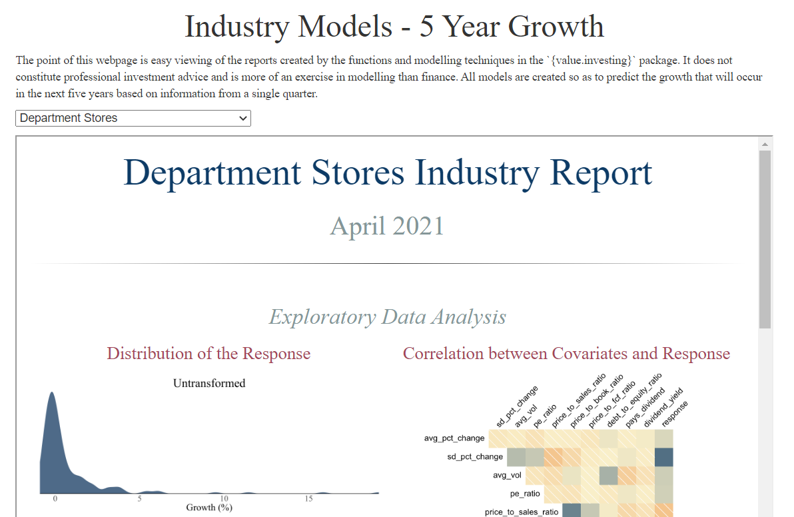
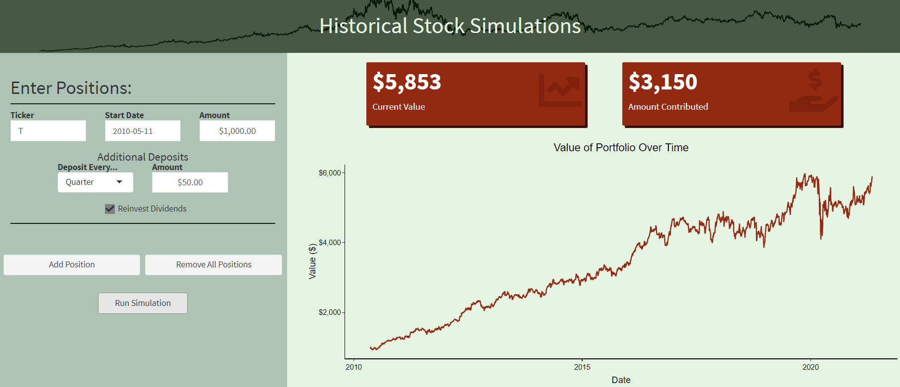

mSHAP
Compute SHAP values for two-part models, using the approach detailed by Matthews and Hartman (2021).
View the Code (and R package) Here
View the Paper Here
Predictive Investing

A basic website displaying reports created for different industries, with the attempt to predict five year stock price growth for the stocks in each industry. Not professional advice at all, just fun to look at.
See the Website Here
View the Code Here
Historical Investing

The Historical Investing app allows users to enter amounts invested in an arbitrary number of stocks of their choice at a past date (including recurring deposits and reinvesting dividends) and to see what the value of that portfolio would be today. It is most useful in the creation and customization of historical stock charts.
Live App
Github Repository
CAS Data
Code that accompanies the paper: An Exploration of two-part models for CAS datasets.